Физическое конструирование и моделирование с использованием EV3
Теоретический блок
Что такое физическое конструирование
Физическое конструирование — это создание модели, которая не только выглядит как техническое устройство, но и работает по определённым физическим принципам: движется, сохраняет равновесие, передаёт усилие или выполняет механическое действие.
При работе с LEGO MINDSTORMS EV3 обучающиеся могут не просто собирать роботов по инструкции, а исследовать, почему модель движется, почему она может быть устойчивой или неустойчивой, как мотор передаёт движение на колёса и как конструкция влияет на поведение робота.
Физическое моделирование помогает изучать реальные процессы на упрощённых моделях. Например, с помощью EV3 можно создать модель транспортного средства, механизма подъёма, тележки, манипулятора или робота, который выполняет движение по заданной траектории.
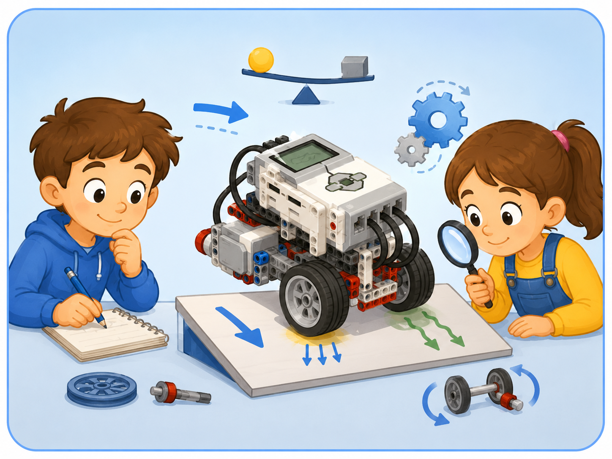
Модель как объект исследования
Робот EV3 может использоваться как физическая модель, на которой изучают движение, устойчивость, силу, трение и работу механизмов.
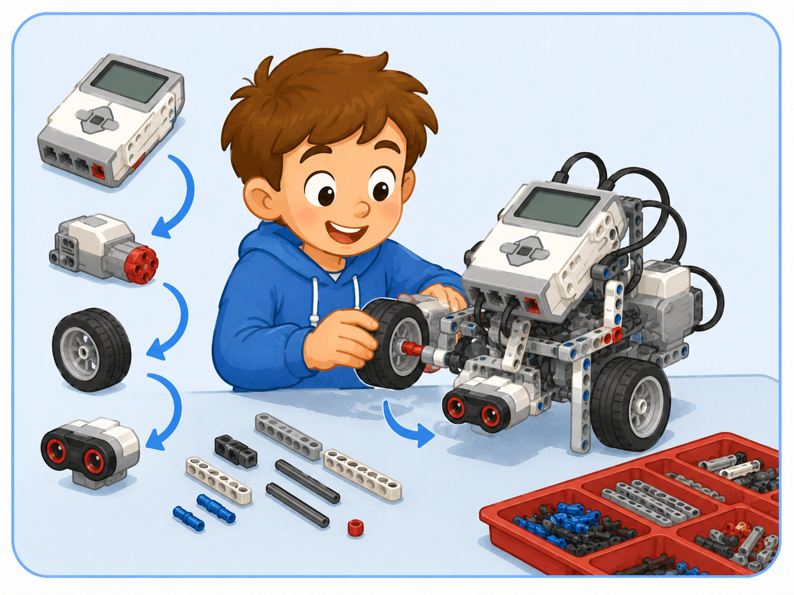
Конструирование
При сборке важно учитывать прочность корпуса, расположение моторов, крепление колёс, датчиков и программируемого блока.
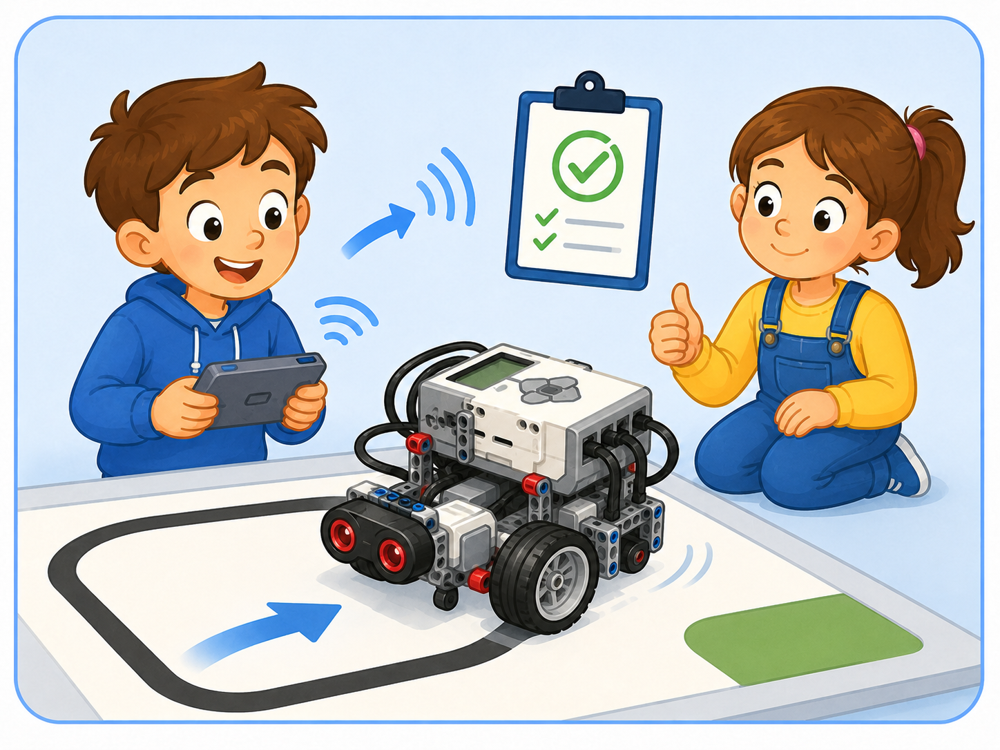
Проверка модели
После сборки модель нужно протестировать: проверить движение, устойчивость, работу моторов и реакцию на команды.
Чем конструирование отличается от моделирования
Конструирование и моделирование связаны между собой, но это не одно и то же. Конструирование направлено на создание самой модели, а моделирование — на изучение явления или процесса с помощью этой модели.
Сравнение понятий
| Понятие | Что означает | Пример с EV3 |
|---|---|---|
| Конструирование | Сборка устройства из деталей | Собрать мобильного робота с двумя моторами и колёсами |
| Моделирование | Изучение объекта или явления с помощью модели | Проверить, как положение центра тяжести влияет на устойчивость робота |
| Эксперимент | Проверка предположения на практике | Запустить робота по разным поверхностям и сравнить движение |
| Вывод | Объяснение результата опыта | Сделать вывод, почему робот движется быстрее или медленнее |
Основные физические идеи в конструкции EV3
Любая модель EV3 связана с физикой. Даже простая колёсная база показывает несколько важных понятий: движение, сила, трение, равновесие, устойчивость и передача движения.
Перемещение модели
Робот движется, когда моторы вращают колёса. Направление и скорость движения зависят от программы и конструкции.
Сцепление с поверхностью
Трение помогает колёсам отталкиваться от поверхности. На разных покрытиях робот может двигаться по-разному.
Способность не падать
Устойчивость зависит от формы конструкции, ширины базы, высоты модели и расположения тяжёлых деталей.
Правильное распределение массы
Если тяжёлые элементы расположены слишком высоко или сбоку, робот может наклоняться или переворачиваться.
От мотора к механизму
Движение может передаваться от мотора к колёсам, рычагам, шестерням или другим подвижным элементам.
Надёжность конструкции
Конструкция должна выдерживать движение, повороты и работу механизмов, не распадаясь при выполнении программы.
Устойчивость модели
Устойчивость — одно из важных свойств робототехнической модели. Если робот неустойчив, он может заваливаться при повороте, падать при ускорении или неправильно выполнять задание.
Чтобы модель была устойчивой, нужно учитывать ширину основания, расположение блока EV3, высоту конструкции и симметричность сборки. Чем ниже расположен тяжёлый элемент и чем шире основание, тем устойчивее обычно модель.
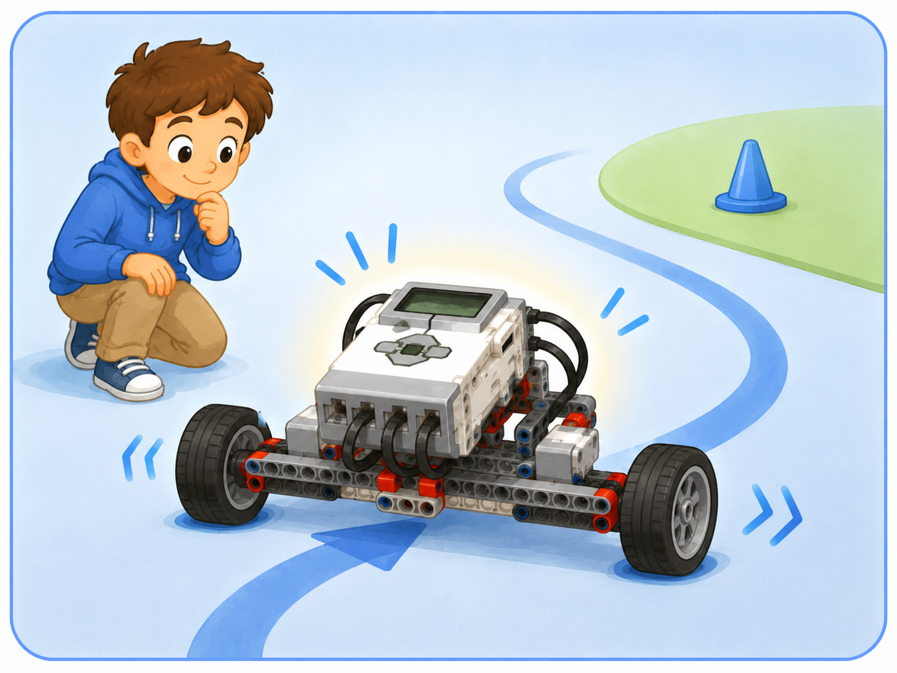
Широкое основание
Широкая база помогает роботу сохранять устойчивость при движении и поворотах.
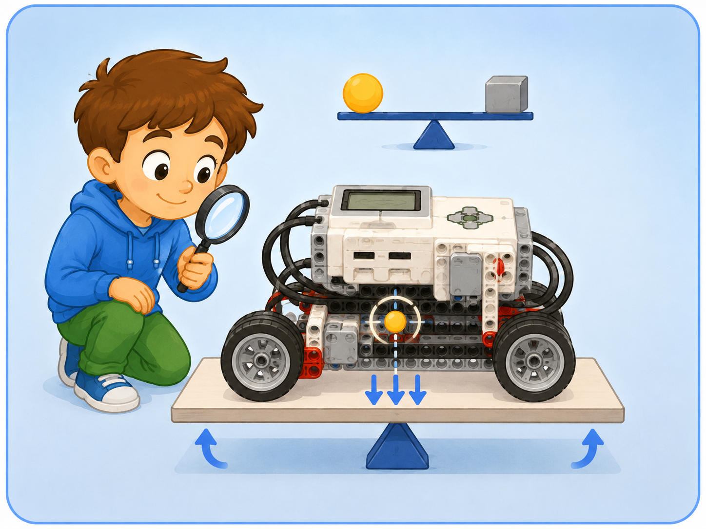
Центр тяжести
Если тяжёлые детали расположены низко и ближе к центру, модель меньше наклоняется и лучше сохраняет равновесие.
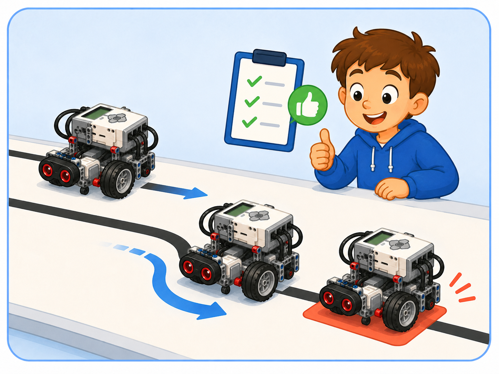
Проверка движения
Даже правильно собранную модель нужно проверить на практике: проехать прямо, повернуть и остановиться.
Пример
Если блок EV3 закрепить слишком высоко, робот может стать неустойчивым. При резком повороте такая модель будет сильнее наклоняться. Поэтому тяжёлые элементы лучше располагать ниже и ближе к центру конструкции.
Передача движения и механизмы
В роботах EV3 движение создаётся моторами. Но мотор не всегда напрямую выполняет нужное действие. Часто движение передаётся через оси, колёса, рычаги или шестерни. Благодаря этому можно изменить направление движения, скорость или усилие.
Перемещение робота
Колёса превращают вращение мотора в движение модели по поверхности.
Передача вращения
Оси соединяют моторы, колёса и механизмы, передавая вращательное движение.
Изменение скорости и усилия
Шестерни могут изменять скорость вращения, направление движения и силу, с которой работает механизм.
Пример
Если в конструкции используется зубчатая передача, мотор может вращать не только колесо, но и подъёмный механизм, рычаг или захват.
Как моделировать физический процесс
При моделировании важно не просто собрать робота, а задать вопрос: что именно мы хотим проверить? Например, можно проверить, как изменится движение робота при разной мощности моторов или на разных поверхностях.
Этапы моделирования
Проверь себя: что влияет на модель?
Нажмите на ситуацию, чтобы увидеть пояснение.
Возможно, у модели высокий центр тяжести или слишком узкое основание. Нужно проверить расположение блока EV3 и ширину базы.
Причина может быть в разной установке колёс, неправильном подключении моторов, неровной поверхности или неодинаковой мощности моторов.
Возможно, не хватает усилия мотора или механизм собран так, что движение передаётся неэффективно. Нужно проверить оси, рычаги и шестерни.
Практический блок
Практическая часть занятия направлена на сборку модели EV3, проверку её устойчивости, движения и объяснение физических принципов, которые проявляются в работе конструкции.
Задание 1. Выбор модели для конструирования
Цель: выбрать модель EV3, которую можно использовать для изучения физического явления.
- Рассмотрите доступные инструкции по сборке EV3.
- Выберите модель, в которой есть движение или подвижный механизм.
- Определите, какие физические явления можно наблюдать в этой модели.
- Запишите, какие элементы конструкции будут важны для работы модели.
- Обсудите выбор с преподавателем.
Подсказка: удобнее выбрать простую модель с колёсами, мотором или механизмом, который можно проверить на практике.
Задание 2. Сборка модели
Цель: собрать физическую модель с использованием EV3.
- Подготовьте необходимые детали конструктора.
- Соберите основу модели по инструкции.
- Закрепите программируемый блок EV3.
- Установите моторы и подвижные элементы.
- Подключите моторы к нужным портам.
- Проверьте прочность конструкции.
Подсказка: после каждого этапа сборки проверяйте, не мешают ли детали движению колёс, осей или механизмов.
Задание 3. Проверка устойчивости
Цель: определить, насколько устойчива собранная модель.
- Поставьте модель на ровную поверхность.
- Проверьте, не наклоняется ли она в одну сторону.
- Осторожно поверните модель и проверьте, сохраняет ли она равновесие.
- Запустите короткое движение или поворот.
- Понаблюдайте, не падает ли модель при выполнении команды.
- Сделайте вывод об устойчивости конструкции.
Подсказка: если модель падает, попробуйте сделать основание шире или расположить тяжёлые детали ниже.
Задание 4. Исследование движения
Цель: проверить, как модель движется при разных параметрах.
- Создайте простую программу движения вперёд.
- Запустите модель на ровной поверхности.
- Измените мощность моторов.
- Сравните движение при меньшей и большей мощности.
- Повторите запуск на другой поверхности.
- Сделайте вывод, какие факторы влияют на движение модели.
Подсказка: на движение влияют мощность моторов, поверхность, трение, колёса, масса модели и симметрия конструкции.
Задание 5. Улучшение модели
Цель: внести изменения в конструкцию на основе наблюдений.
- Определите, что в модели работает неидеально.
- Запишите проблему: модель падает, едет неровно или механизм заедает.
- Предложите одно изменение конструкции.
- Внесите изменение в модель.
- Повторно проверьте движение или работу механизма.
- Сравните результат до и после изменения.
Подсказка: улучшение модели должно быть связано с наблюдаемой проблемой, а не просто с изменением внешнего вида.
Инструкции по сборке моделей для исследования
В этом разделе представлены инструкции по сборке моделей LEGO MINDSTORMS EV3, которые можно использовать для изучения движения, равновесия, устойчивости, вращения и работы различных механизмов.
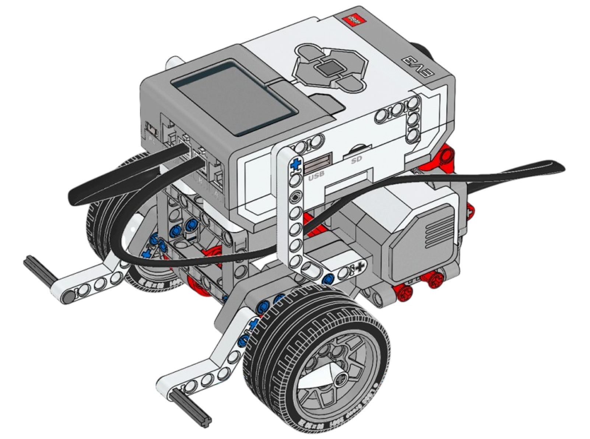
Базовая тележка
Что изучаем: движение, трение и устойчивость.
Простая мобильная модель позволяет исследовать движение робота по разным поверхностям и влияние мощности моторов на скорость.
Открыть инструкцию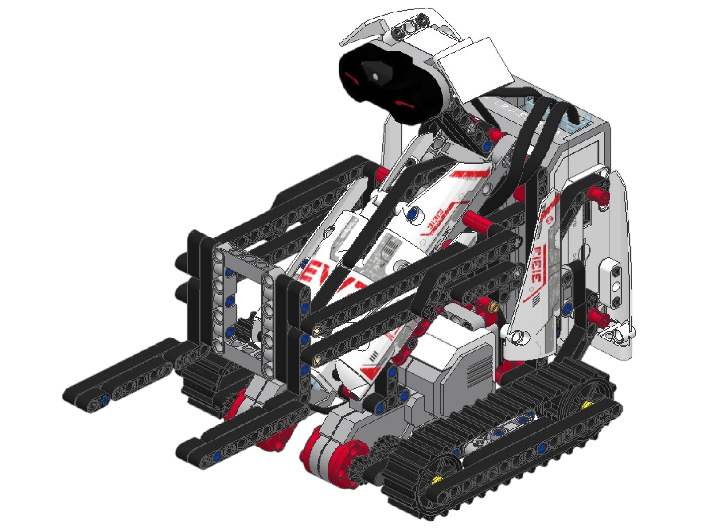
Погрузчик
Что изучаем: подъём груза и передачу усилия.
Модель позволяет рассмотреть работу подъёмного механизма, движение рычагов и влияние нагрузки на работу мотора.
Открыть инструкцию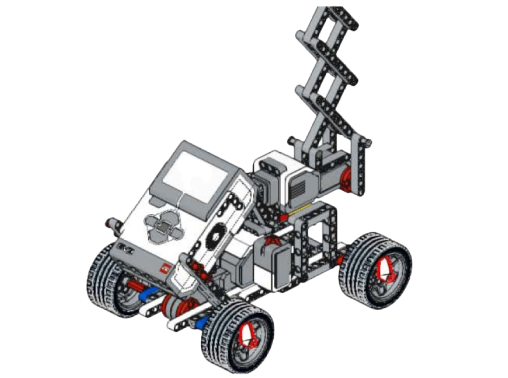
Ножничный подъёмник
Что изучаем: рычаги и изменение высоты.
Конструкция показывает, как небольшое движение механизма может использоваться для подъёма платформы.
Открыть инструкцию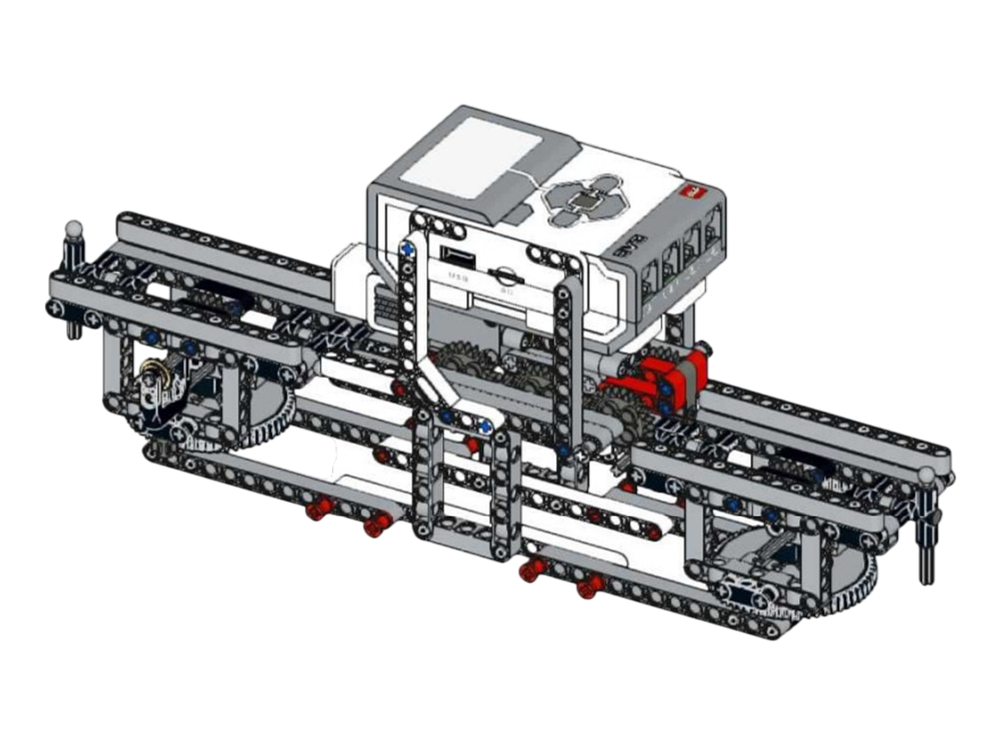
Поворотная платформа
Что изучаем: вращательное движение.
Модель помогает исследовать вращение платформы, изменение направления и передачу движения от мотора к конструкции.
Открыть инструкцию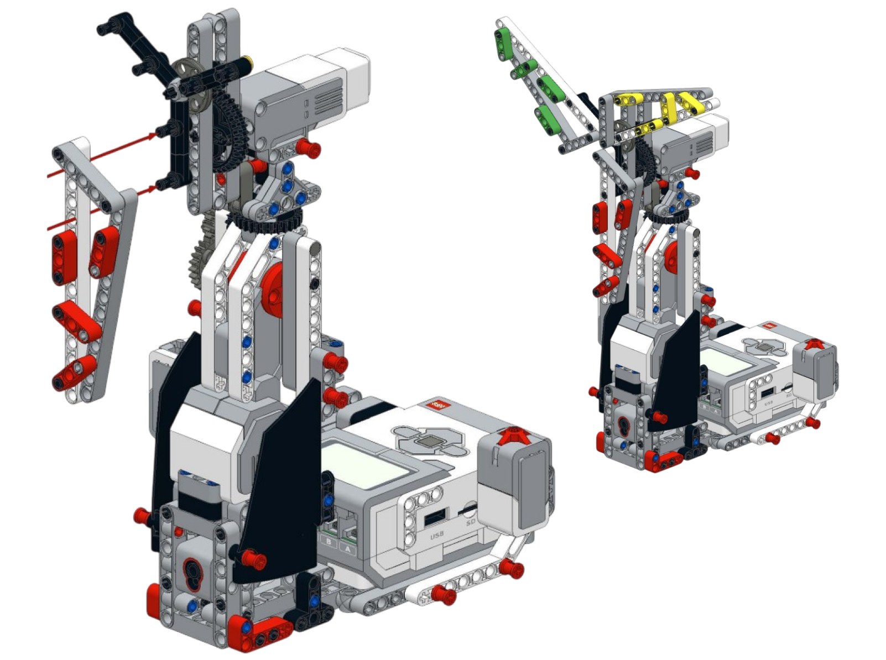
Вентилятор
Что изучаем: вращение и скорость движения.
Модель демонстрирует передачу вращения от мотора к лопастям и позволяет сравнивать работу механизма при разной мощности.
Открыть инструкцию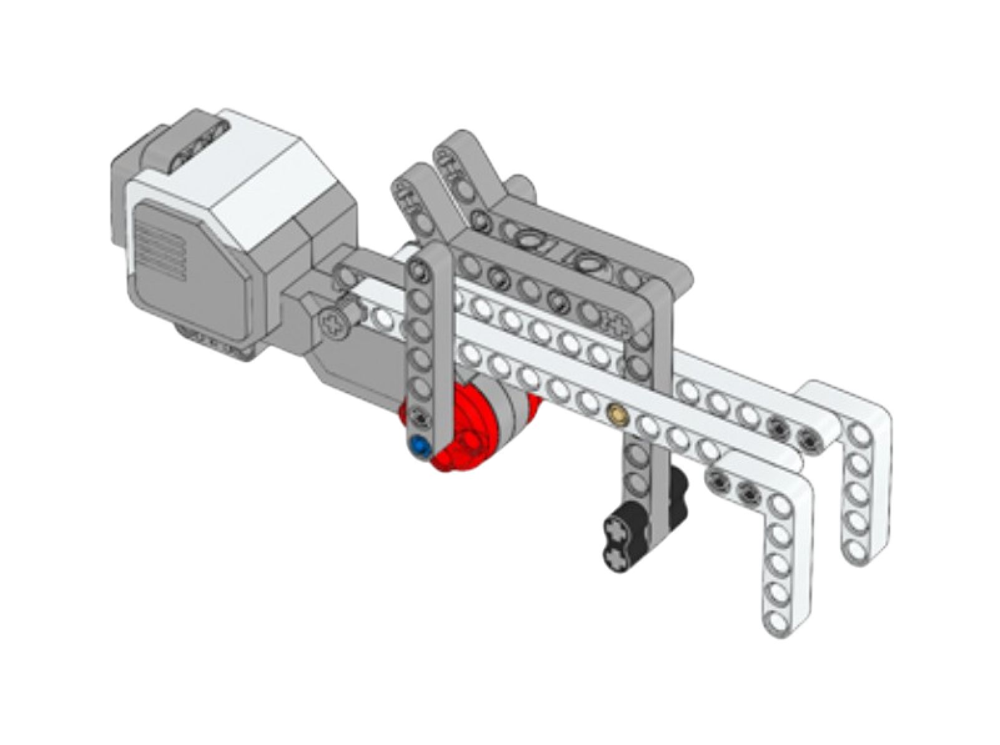
Граббер
Что изучаем: захват и передачу движения.
Модель показывает, как движение мотора передаётся захватному механизму и используется для удержания и перемещения предметов.
Открыть инструкциюВопросы для самопроверки
1. Что такое физическое конструирование?
Физическое конструирование — это создание модели, которая работает по определённым физическим принципам: движется, сохраняет равновесие или выполняет механическое действие.
2. Что такое физическое моделирование?
Физическое моделирование — это изучение объекта, явления или процесса с помощью модели.
3. Чем конструирование отличается от моделирования?
Конструирование связано со сборкой модели, а моделирование — с изучением явления или процесса с помощью этой модели.
4. Почему важна устойчивость модели?
Если модель неустойчива, она может падать, наклоняться или неправильно выполнять задание.
5. Что влияет на устойчивость робота?
На устойчивость влияют ширина основания, высота конструкции, расположение блока EV3 и других тяжёлых деталей.
6. Для чего нужны шестерни?
Шестерни нужны для передачи движения, изменения скорости, направления вращения или усилия механизма.
7. Почему робот может ехать неровно?
Причиной может быть разная установка колёс, неправильное подключение моторов, неровная поверхность или несимметричная конструкция.
8. Что нужно сделать после сборки модели?
После сборки нужно проверить прочность конструкции, устойчивость, движение модели и правильность подключения моторов.
9. Что значит улучшить модель?
Улучшить модель — значит внести изменения, которые помогают устранить проблему: сделать модель устойчивее, прочнее или удобнее для движения.
10. Почему EV3 удобно использовать для физического моделирования?
EV3 удобно использовать, потому что с его помощью можно собирать реальные движущиеся модели, программировать их и проверять физические явления на практике.